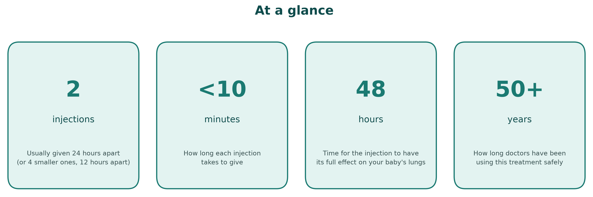
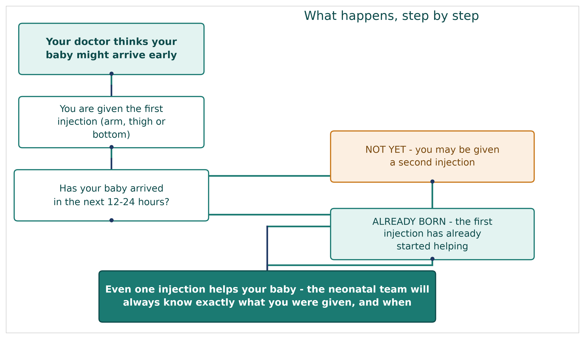
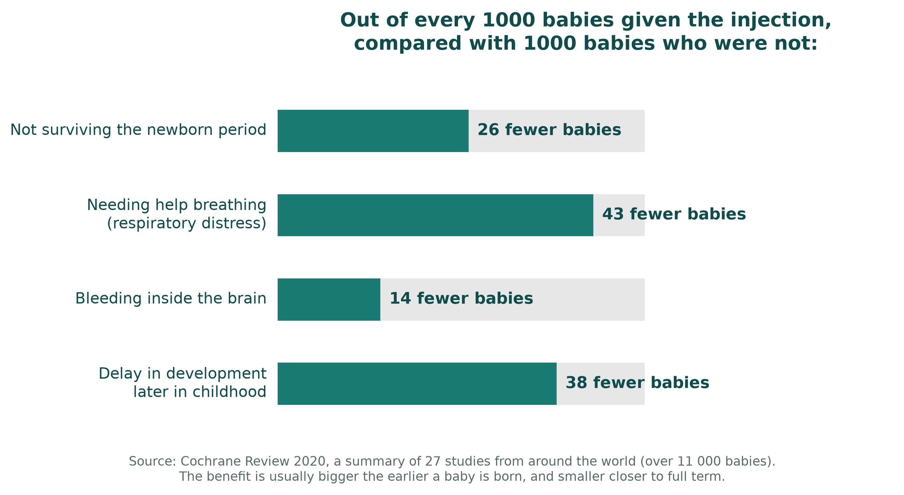
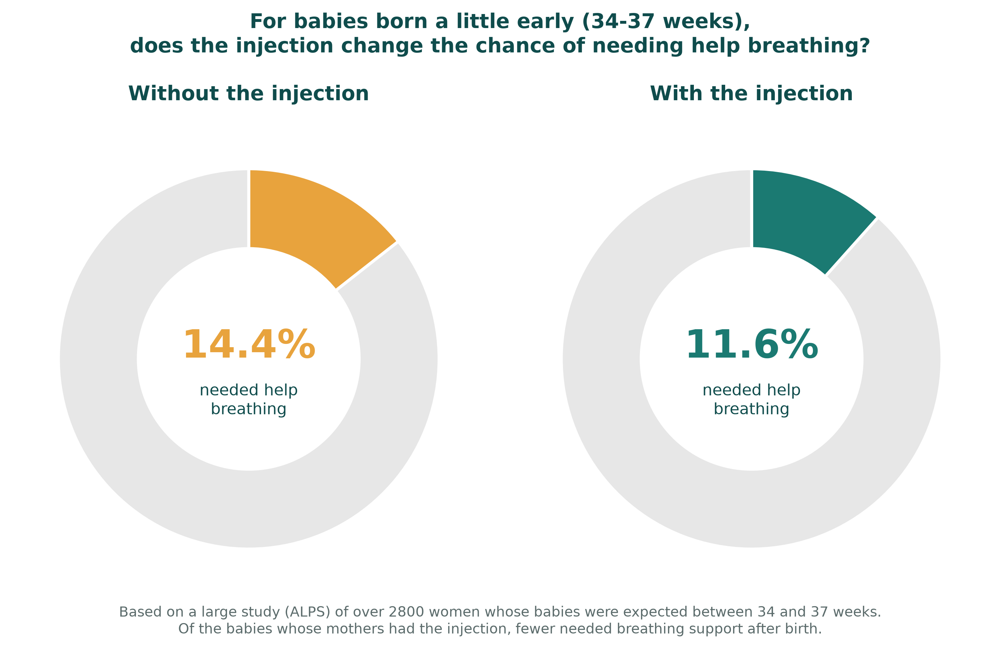

A plain-English guide to why these injections are offered, what to expect, and honest answers to the questions parents ask most
If your doctors or midwives think your baby might be born early, they may offer you an injection of a steroid medicine. This is a different kind of steroid to the ones used for muscle-building or for allergies. It is a medicine that has been used safely in pregnancy for over fifty years.
The steroid crosses to your baby and helps their lungs get ready to breathe air. It also lowers the chance of some other problems that can affect babies born too soon. Two medicines can be used, dexamethasone or betamethasone, and both work in a very similar way. Your team may give you either one, and this is not a sign that anything has gone wrong or that one is being chosen over the other for any special reason.

The injection is usually given as two doses, about 24 hours apart (sometimes as four smaller doses, 12 hours apart, which works just as well). It is given into your arm, thigh, or bottom, in the same way as many other injections.

| Dexamethasone | Betamethasone | |
|---|---|---|
| Usual pattern | 4 smaller injections, 12 hours apart | 2 injections, 24 hours apart |
| Total medicine given | About the same overall dose | About the same overall dose |
| How well it works | No meaningful difference found between the two in the largest study comparing them directly | No meaningful difference found between the two in the largest study comparing them directly |
A note on dosing schedules: if you were told your injections would be 12 hours apart rather than 24, this is not unusual or a mistake. It is one of the standard ways this medicine is given around the world.
Researchers have followed thousands of babies whose mothers had this injection before an early birth, compared with babies whose mothers did not. Here is what a large review of 27 studies, involving more than 11 000 babies, found.

These numbers are averaged across babies born at different stages of pregnancy. As a general rule, the benefit is bigger the earlier your baby is due, and smaller if your baby is close to full term.
Sometimes there is only time for one injection before your baby arrives. This is still much better than no injection at all. In one large study, a single injection given less than 24 hours before birth cut the extra risk linked to being born early by around half, compared with having no injection. Your team will always try to give the first dose as early as possible, even if they think there may not be time for a second.
If your baby arrives very soon after your injection, perhaps even within an hour, there is no evidence this causes any harm, and it may still help. Your medical team will not delay the injection just because your baby's arrival might be very close.
Babies born a little early, between 34 and 37 weeks, are much less likely to have serious problems than babies born very early. Even so, a large study looked at whether the injection still helps at this stage.

The injection did lower the chance of needing breathing support. It also made low blood sugar in the first day or two after birth somewhat more common, though this is usually mild and settles on its own within a day. Your baby's blood sugar will be checked as a routine part of their care if you have this injection close to a late-preterm birth.
Occasionally, because of how quickly things happen, you might end up with one dose of one medicine and one dose of the other, rather than two doses of the same one. This is not a mistake, and it does not mean your baby missed out on the benefit. Your baby will still have received real, meaningful medicine. Because this exact combination has not been specifically studied, your team cannot say for certain it worked exactly as well as two doses of a single medicine, so it will be noted in your records and your baby may be monitored a little more closely, in the same way as if you had an incomplete course.
The same applies if you only had a single dose for any reason. It is documented clearly, and it is not treated as a problem, just as useful information for your baby's team.
This is one of the questions parents ask most, and it deserves an honest answer rather than a simple reassurance.
| What we know | What we don't know |
|---|---|
| A very large study from Finland, following hundreds of thousands of children, found a somewhat higher rate of mental health or developmental diagnoses in children who had the injection before birth but were then born at full term. | Whether the injection itself caused this, or whether it reflects the reason the injection was given in the first place (such as high blood pressure, a placenta problem, or another sign the pregnancy looked risky). |
| When researchers compared brothers and sisters in the same family, who share genes and home environment, the difference became smaller, though it did not disappear completely. | Exactly how much smaller effect, if any, remains once every other factor is accounted for. |
| A separate large study, from Taiwan, looked at the same question and found no difference at all in babies born at full term. | Why the two studies point in different directions; this could reflect real differences between populations, or the limits of this kind of research. |
| For babies who are genuinely born early, and this is most babies who receive the injection, the evidence for benefit is strong and consistent, including in studies that followed people for over 30 years. | There is no known reason to expect a different, unstudied risk for the small number of babies who go on to reach full term. |
A short answer you may hear from your team: "The strongest evidence, including studies that followed people for over thirty years after this treatment, hasn't found a difference in thinking, memory, or mental health in adults who received it as unborn babies and were then born early, which is when this treatment is mainly used. There's a separate, harder question about babies who have the injection but then go on to be born at full term. Some large studies have found a small difference in that group, others have found none, and we cannot be sure whether any difference is caused by the injection itself or by whatever made the pregnancy look risky in the first place. We won't dismiss this question, and we won't overstate it either."
If your pregnancy continues and you remain at high risk of an early birth more than a week after your first course, your team may talk to you about a second course. This can further reduce breathing problems for your baby. It also tends to make your baby slightly smaller at birth, by around 100 grams on average. The longest follow-up study of babies who had a repeat course, over 20 years, found this size difference did not affect their long-term health.
The one situation where extra care is taken is if a repeat course is given and the pregnancy then continues all the way to full term. This is the group in which any downside from repeat dosing has shown up most clearly, which is why repeat courses are limited to specific situations, usually to a maximum of two in total.
This leaflet is based on a review of the major research studies and national guidelines on this treatment, including:
This is general information to support a conversation with your own doctors and midwives, who know your individual circumstances. It is not a substitute for their advice.